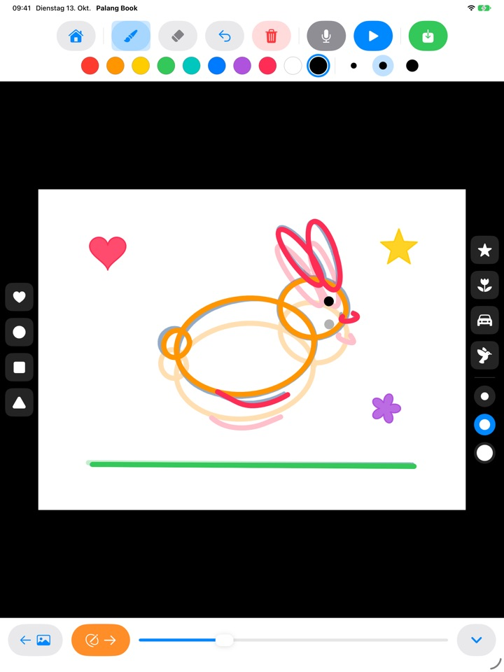
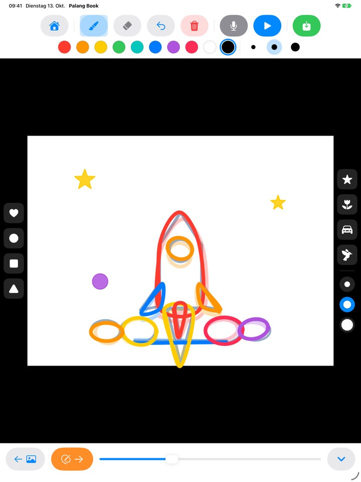
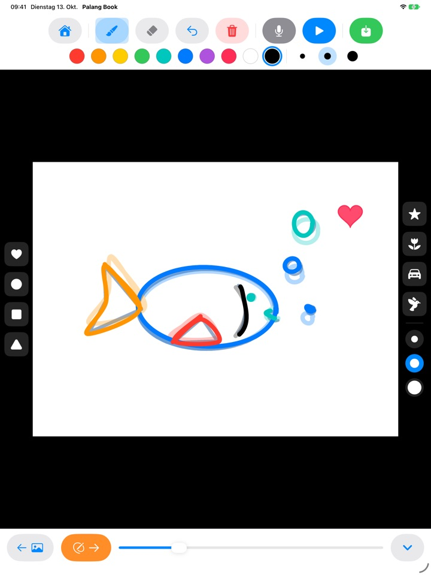
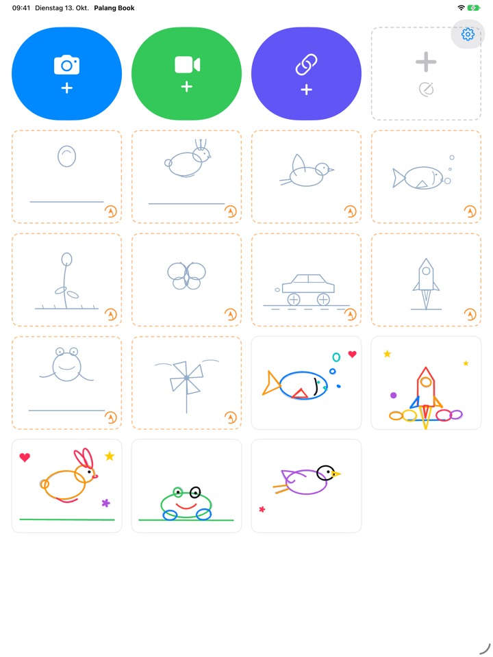

Nachzeichnen.
Und es bewegt sich!
Ihr Kind zeichnet eine zarte Vorlage Seite für Seite nach. Ein Tipp auf Abspielen, und die Vorlage verschwindet. Übrig bleiben nur seine eigenen Striche, und die bewegen sich. Alle Tasten sind Bilder, so klappt es auch ganz allein, lange bevor Ihr Kind lesen kann.
Für das iPad. 3 Vorlagen zum Nachzeichnen sind kostenlos.

Ein paar Seiten malen
Malen Sie etwas und tippen Sie dann auf den orangefarbenen Pfeil für die nächste Seite. Die vorige Seite schimmert leicht durch. Nach zwei, drei Seiten auf die blaue Abspieltaste tippen.
Schade, wenn ein tolles Bild einfach stillsteht, oder?
Für einen Trickfilm malt man fast dasselbe Bild immer wieder, jedes Mal ein kleines bisschen anders. Allein wissen Kinder kaum, wo sie anfangen sollen. Palang Book legt eine zarte Vorlage darunter, in der die Bewegung schon steckt, und Ihr Kind folgt einfach der Linie. Sobald es auf Abspielen tippt, bewegt sich sein Bild.
Der Linie folgen, und fertig ist der Trickfilm
Ein hüpfender Ball, ein springender Hase, ein fliegender Vogel, ein schwimmender Fisch, eine aufblühende Blume, ein Schmetterling, ein flitzendes Auto, eine Rakete, ein Frosch und ein Windrad. Jede Vorlage hat rund 20 Seiten.
Die vorige Seite schimmert leicht durch, so gelingt die nächste ganz leicht. Beim Abspielen verschwindet die Vorlage, und nur das Bild Ihres Kindes bewegt sich.

Stempel und zehn Farben
Herz, Kreis, Quadrat, Dreieck, Stern, Blume, Auto und Vogel lassen sich einfach aufstempeln. Stempel und Pinsel gibt es in je drei Größen, dazu zehn Farben.
Mit Radiergummi und Widerrufen sind Fehler schnell behoben. Gemalt wird mit dem Finger oder dem Apple Pencil.

Über eigene Videos oder auf leerem Papier
Laden Sie ein selbst gedrehtes Video oder eines aus der Fotos App und zeichnen Sie darüber. Wird der Hintergrund ausgeblendet, laufen nur die bemalten Szenen nacheinander auf weißem Papier ab. Außerdem gibt es ein leeres Daumenkino ganz ohne Vorlage.
Ein Tipp aufs Mikrofon, und die Stimme Ihres Kindes wird mit aufgenommen. Das fertige Werk sichern Sie als Video in Fotos und teilen es mit der Familie.

In drei Schritten startklar
- 1
Vorlagenkarte antippen
Die Karten mit orange gepunktetem Rand auf dem Startbildschirm sind die Vorlagen.
- 2
Malen und umblättern
Der orangefarbene Pfeil führt zur nächsten Seite.
- 3
Auf Abspielen tippen
Ein Tipp auf die blaue Abspieltaste, und das Bild bewegt sich.
Was die Tasten bewirken
- Orange gepunktete Karte
- Vorlage nachzeichnen
- Grau gepunktete Karte
- Leeres Daumenkino
- Blaue Kamera
- Über ein selbst gedrehtes Video malen
- Grünes Video
- Video aus Fotos laden
- Indigoblauer Link
- Link zu einer Videodatei einfügen
- Orangefarbener Pfeil
- Nächste Seite
- Blaue Abspieltaste
- Animation abspielen, erneut tippen zum Anhalten
- Gebogener Pfeil
- Letzten Strich widerrufen
- Roter Papierkorb
- Ganze Seite löschen (mit Widerrufen zurückholen)
- Mikrofon
- Stimme aufnehmen, während die Animation in Schleife läuft
- Video-Symbol
- Videohintergrund ausblenden (rosa Streifen heißt: nur die Zeichnung)
- Grünes Sichern
- Als Video in Fotos sichern
Um ein Werk zu löschen, halten Sie seine Karte auf dem Startbildschirm gedrückt. Zeichnungen, Aufnahme und importiertes Video werden mitgelöscht.
Kostenlos ausgiebig ausprobieren. Den lebenslangen Zugang, wenn es gefällt.
Kostenlos
- 3 Vorlagen (Ball, Hase, Blume)
- 3 gespeicherte Werke
- 1 Video laden
- Leere Daumenkinos mit bis zu 10 Seiten
- Sprachaufnahme bis 15 Sekunden
- Stempel, Farben, Pinsel und Sichern in Fotos
Lebenslanger Zugang
- Alle Vorlagen, auch künftige
- Unbegrenzt Werke, Seiten, Videos und Aufnahmezeit
- Keine Palang Book Karte am Ende gesicherter Videos
Einmal kaufen, kein Abo. Mit Familienfreigabe auf jedem iPad der Familie.
Kostenlos gesicherte Videos enden mit einer kurzen Palang Book Karte. Wer Palang Book schon vor dem lebenslangen Zugang genutzt hat, hat bereits alles freigeschaltet.
Häufige Fragen
Wie funktionieren die Vorlagen?
Die zarten hellblauen Linien sind die Vorlage. Ihr Kind zeichnet sie nach, und beim Abspielen verschwindet die Vorlage, sodass sich nur seine eigenen Striche bewegen. Nach etwa 20 Seiten ist der Trickfilm fertig.
Ich möchte nur die Zeichnung abspielen und sichern, ohne das Video.
Tippen Sie in einem Videoprojekt oben in der Werkzeugleiste auf das Video-Symbol, bis es rosa gestreift ist. Beim Abspielen und Sichern erscheint dann nur die Zeichnung auf weißem Hintergrund. Es laufen nur die bemalten Szenen, so wird aus ein paar Zeichnungen über einem langen Clip ein kurzer Trickfilm.
Wo landet das fertige Video?
Tippen Sie auf die grüne Sichern-Taste ganz rechts in der Werkzeugleiste, dann wird ein mp4 Video in Fotos gesichert. Erlauben Sie beim ersten Mal den Zugriff auf Ihre Fotos.
Wie kommt eine Stimme dazu?
Tippen Sie auf das Mikrofon, um aufzunehmen, während die Animation in Schleife läuft, und auf Stopp, um die Aufnahme zu beenden. Eine neue Aufnahme ersetzt die alte. Beim Sichern ist die Stimme im Video enthalten.
Ein Videolink lässt sich nicht öffnen.
Prüfen Sie die Internetverbindung und ob die Adresse direkt auf eine Videodatei zeigt (also zum Beispiel auf .mp4 endet). Links zu Seiten von Videoplattformen lassen sich nicht öffnen. Bitte verwenden Sie selbst gedrehte oder frei nutzbare Videos.
Der Handballen malt ständig mit.
Der gebogene Pfeil entfernt den letzten Strich, der rote Papierkorb löscht die ganze Seite (Widerrufen holt sie zurück). Passiert das oft, schreiben Sie uns, wir helfen gern.
Warum kommt vor dem Kaufbildschirm eine Rechenaufgabe?
Damit Kinder nicht allein zum Kaufbildschirm gelangen. Tippt ein Kind auf etwas Gesperrtes, erscheint ein großes Schloss mit dem Hinweis „Zeig das einem Erwachsenen“. Der Kaufbildschirm öffnet sich erst, wenn ein Erwachsener eine Malaufgabe löst.
Wie stelle ich meinen Kauf wieder her?
Tippen Sie oben rechts auf dem Startbildschirm auf das Zahnrad, wählen Sie Lebenslanger Zugang, beantworten Sie die Frage für Erwachsene und tippen Sie auf Käufe wiederherstellen. Sie müssen mit demselben Apple Account angemeldet sein, mit dem Sie gekauft haben.
Wie sende ich Feedback aus der App?
Tippen Sie auf dem Startbildschirm auf das Zahnrad und wählen Sie Feedback senden. Sie können ein Bildschirmfoto anhängen und für eine Antwort Namen und E-Mail-Adresse angeben. Feedback sollte bitte von einem Elternteil gesendet werden.
Sammeln Sie Daten über mein Kind?
Nein. Palang Book sammelt keinerlei personenbezogene Daten, Zeichnungen und Aufnahmen bleiben auf Ihrem iPad. Details finden Sie in der Datenschutzerklärung.
Fragen oder Probleme? Schreiben Sie an mizzking75@gmail.com. Wir antworten in der Regel innerhalb von 2 bis 3 Tagen.